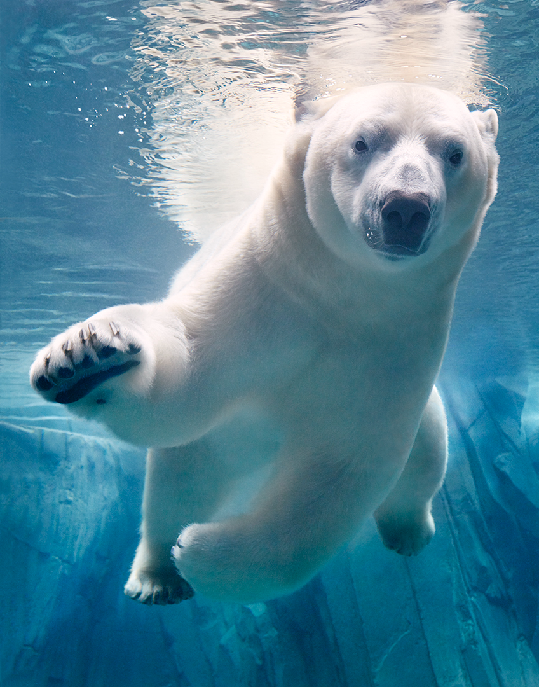

Por primera vez el oso polar en Estados Unidos tiene su propio hábitat crítico. La franja de 484 734 kilómetros cuadrados alrededor de Alaska está prácticamente fuera de la costa, donde unos 3 500 Ursus maritimus viven sobre el hielo marino que podría tener grandes depósitos de petróleo. Establecida el otoño pasado, la designación del Departamento del Interior de EUA significa que los planes de cavar pozos tendrán supervisión federal (las estructuras existentes están exentas).
También se protege a las islas de barrera y la costa donde las osas se guarecen cuando el hielo se derrite. Hasta ahora, las reacciones han sido encontradas. El estado de Alaska y las corporaciones de Alaska Native, dependientes de los ingresos del petróleo y el gas, dicen que la burocracia y las dimensiones de la zona causarán grandes pérdidas monetarias.
Los ambientalistas apoyan la decisión pero temen que no se cumplirá. Para salvar al oso polar, dicen, se deben agregar a la lista de especies en peligro de extinción no a la de amenazadas. Esto daría un impulso a las protecciones legales y daría más libertad de acción para lidiar con la principal amenaza al territorio de los animales: las emisiones de gas invernadero que causan el cambio climático.
Conoce más de este maravilloso animalito AQUÍ